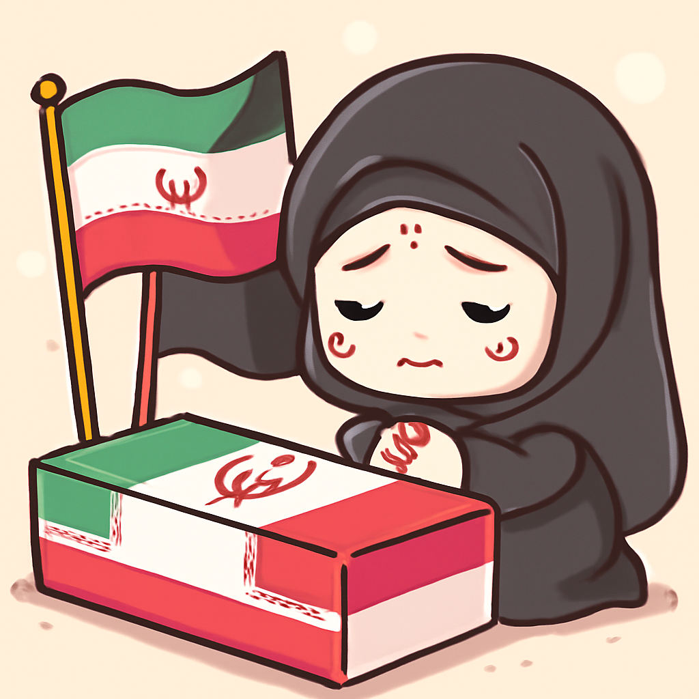
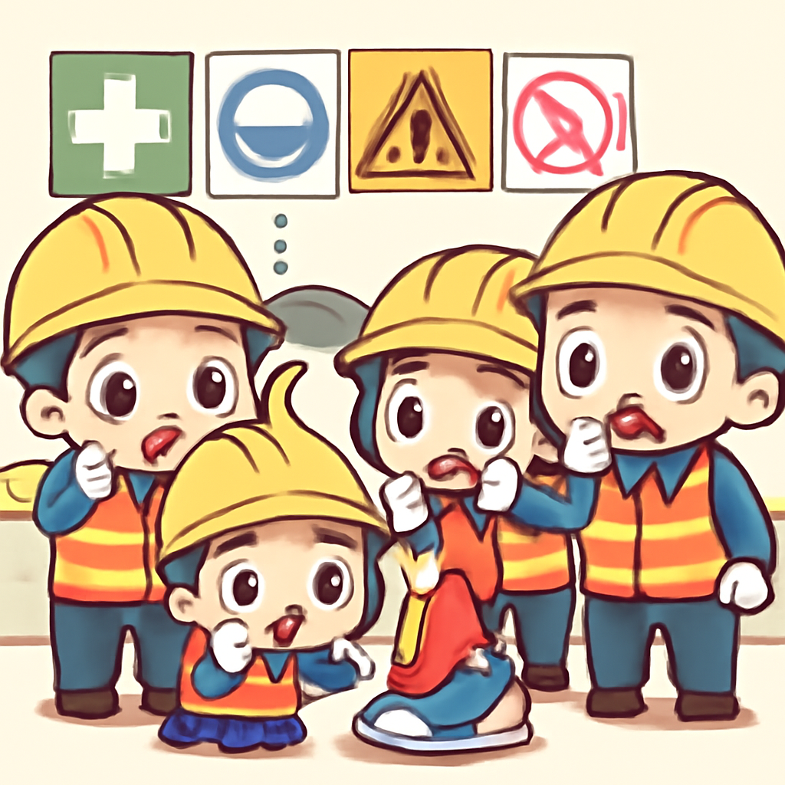
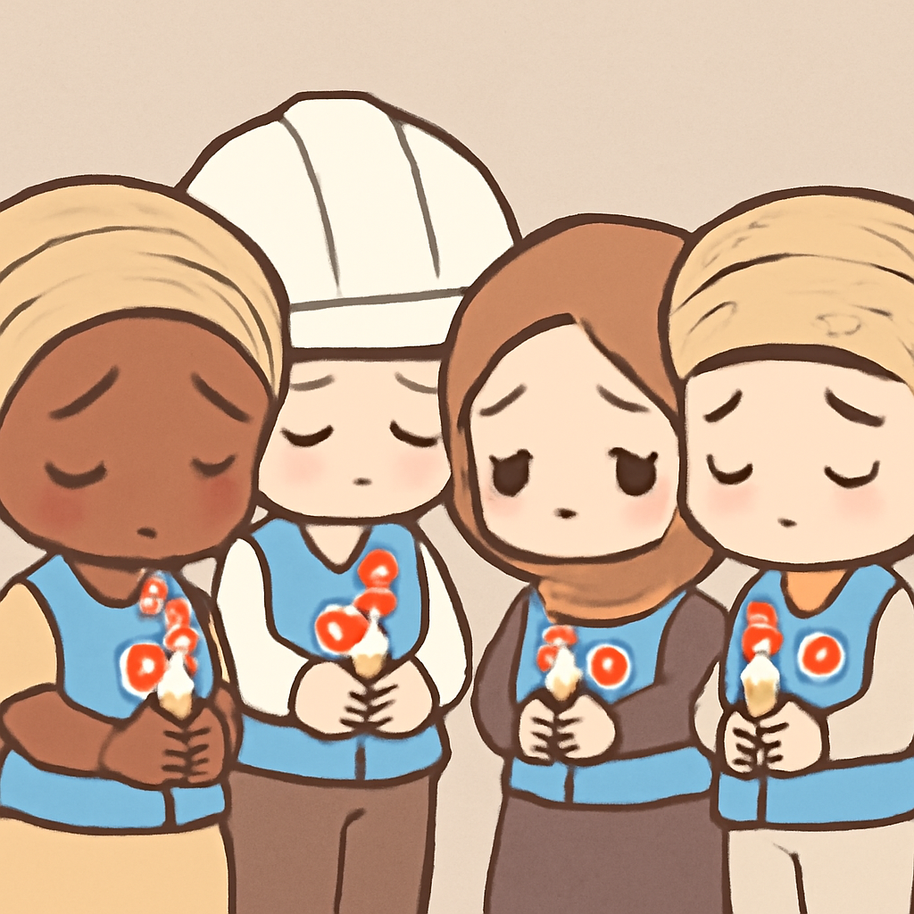
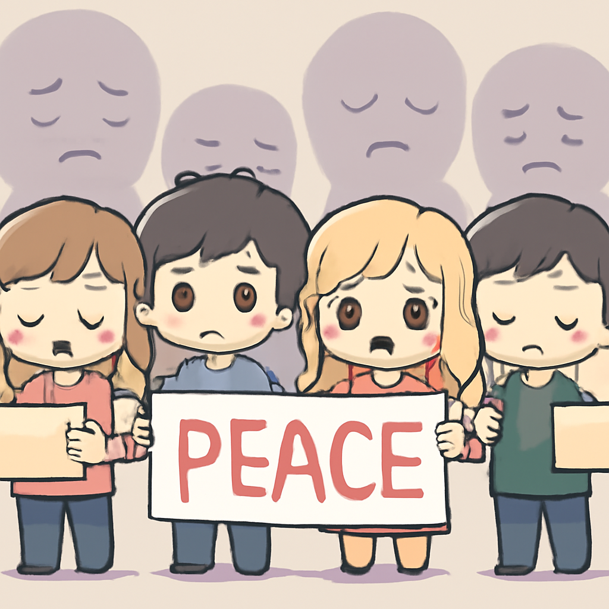

其一 · 伊朗德黑蘭 · 哈梅內伊葬禮引發美伊衝突升級
伊朗最高領導人哈梅內伊葬禮期間，衝突持續升級。

在伊朗德黑蘭，哈梅內伊的葬禮吸引了數千名民眾，與此同時，美國和伊朗又互相發動空襲，造成至少14人死亡。這場衝突的升級使得雙方和平的希望愈加渺茫，似乎只能期待某位政治家能夠出現，帶來一點曙光。
🔗 原始新聞 ↗
2026-07-10 · 以古觀今，以笑抗愁
伊朗最高領導人哈梅內伊葬禮期間，衝突持續升級。

在伊朗德黑蘭，哈梅內伊的葬禮吸引了數千名民眾，與此同時，美國和伊朗又互相發動空襲，造成至少14人死亡。這場衝突的升級使得雙方和平的希望愈加渺茫，似乎只能期待某位政治家能夠出現，帶來一點曙光。
🔗 原始新聞 ↗
烏克蘭對俄軍艦發動攻擊，試圖切斷燃料供應。
烏克蘭近日在克里米亞附近針對俄軍艦展開攻擊，這一行動意在削弱俄方的燃料供應線。隨著戰爭進一步升級，這不僅影響了戰略供應，也讓當地居民的日常生活更加困難，感覺就像是在玩一場高風險的遊戲，誰都不想輸。
🔗 原始新聞 ↗
廣東一鞋廠發生火災，造成28人罹難。

在中國廣東，一家鞋業工廠發生火災，造成至少28人喪生。習近平已要求當局進行徹底調查，這起事件再度引發對工廠安全的關注。看來，火災不是唯一危險，還有許多不明的隱患在暗中潛伏。
🔗 原始新聞 ↗
加薩人道工作者在以色列空襲中喪生，震驚社會。

在加薩，巴勒斯坦人道工作者穆罕默德·阿爾-瓦希迪在一次以色列空襲中喪生，這一事件引發了廣泛的悲痛和抗議。當地人對人道工作者的犧牲表示哀悼，這不僅是個別事件，更是整個地區人道危機的縮影。
🔗 原始新聞 ↗
印度一起11歲少女被殺事件，引發全國憤怒。

在印度，11歲少女被報導失踪後，遺體在池塘中被發現，當地社會對此感到震驚與憤怒。這起案件再次引發對性暴力問題的關注，民眾要求政府加強保護措施。希望這次的聲音能夠讓改變發生，而不是又一次被淹沒。
🔗 原始新聞 ↗